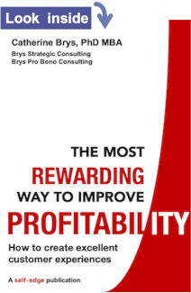

Client experience for law firms
For law firms that want to thrive
Increase your profitability and resilience
- Do you truly understand what really matters to your clients? Do you know how they experience you? Do you feel their pain?
- Do clients return to you for new or related matters?
- Do new clients come to you based on personal recommendations?
- And are you yourself comfortable recommending your firm to friends and family?
Make your client experience top-notch and:
- Generate positive word-of-mouth
- Stand out from the competition
A great client experience is so much more than customer service. It is about being steeped in client-centric design.
I help you to get an accurate picture of your client experience – through the eyes of your clients. To identify what really matters to them.
I guide you to develop an ambitious vision that serves your clients and you.
Together we consider your client experience in the round: the value you bring, your operations, your processes.
I help you to decide on priority actions and how to measure progress.
You will realise your vision of success.
Download your journey map to excellence
Client experience:
Walk in your clients’ shoes

Why work with me?
I help you develop an ambitious vision for your firm.
I do a deep-dive into all factors of the client experience, and identify root causes of issues.
I use a systematic, whole-firm approach, engaging your staff.
I make change manageable and impactful.
I help you to create a framework for measuring impact.
Change is daunting. My approach is pragmatic and focused on achieving maximum impact. Your firm's change journey will be manageable and fulfilling.
I make the journey smooth and rewarding
Testimonials
Client excellence at Inksters
“The feedback from staff on Catherine’s session was extremely positive. We collectively identified a number of areas we can improve upon and drew up collective and individual action plans during the workshop – we are now putting in place steps to achieve those improvements for the benefit of our clients.”
Brian Inkster, CEO Inksters
Feedback from participants of a Customer Experience Excellence workshop for Inksters:
“The workshop made you think about refreshing everything! I look at everything differently although I am 100% customer focused.”
“It made me think about the client’s perspective and how things look from the other side.”
“It helped me focus on what we do well and what could be improved collectively.”
“Everyone was motivated and a doable collective action plan to work towards was created.”
“I was able to list individual changes. I will implement them on Monday.”
My client experience philosophy
My book with Action Planner and Success Monitor: "The Most Rewarding Way to Improve Profitability — How to create excellent customer experiences"

Read more about my book
"Improving profitability by creating excellent customer experiences",
The Law Society of Scotland, Sole Practitioner and High Street Firm Conference 2022
Conclusion of my presentation
Extract from the Q&A session chaired by Austin Lafferty, Past President of the Law Society of Scotland
My articles on client experience
- How easy is it to be your customer? Practical tips for avoiding value erosion.
- The three pillars of customer experience excellence. Getting these right will get you a long way.
- The value chain: a valuable tool for improving your customer experience. Your customer experience is only as good as the weakest link.
- Three reasons why change fails – and antidotes. Avoid these traps and change will be more effective and rewarding.
My article "Blinded by client satisfaction?" in the Journal of The Law Society of Scotland
Abstract:
Client satisfaction scores are not a reliable measure of your clients’ satisfaction. Instead, a 360° “health check” gives you a much more accurate picture of your firm’s client experience performance. This approach also recognises that client experience issues go far beyond the interaction with the client. They are rooted in your strategy, values, culture and operations and the role of every person in your firm – both client-facing staff and support staff.
To create positive word of mouth – and indeed prevent poisonous negative word of mouth – use a simple three-step process: (1) assess your client experience using a whole-firm perspective; (2) set your vision of success; and (3) prioritise the most impactful actions. Your firm will thrive like never before.